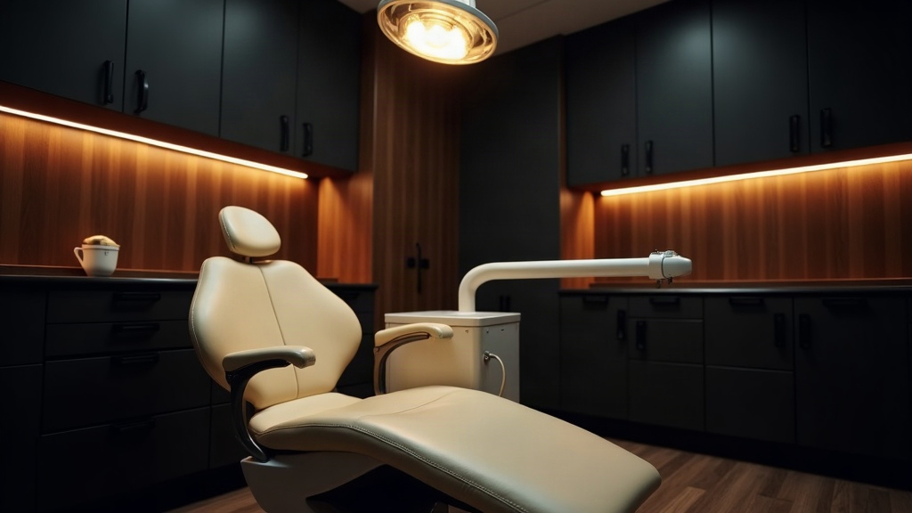
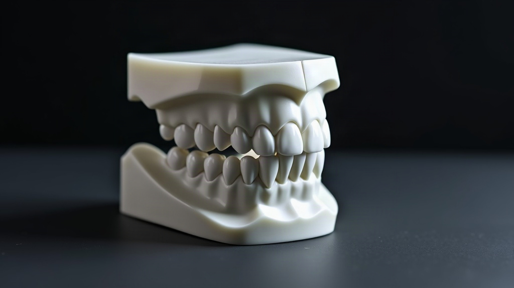

Dental services in Riverbend
What Alder Grove Dental does, listed by plain name.
Template composition. Nothing on this page is a fact about a real practice.
Every photograph here is a generated template image. So are the practice name, the town, the telephone number, the email address, and all four service names with the lines under them. None of it describes a real practice, and all of it has to be replaced before ship. Each slot carries a swap marker naming what replaces it.
Two things on this page are flagged for the owner rather than for the swapper. The paragraph under "How we work" states what this practice does at an appointment, and no owner has confirmed it: confirm or strike it. And the service menu itself is unresolved, so these four names were chosen to reproduce neither of the two menus on record; nothing downstream may pick a side.
This is the services page body on its own. There is no site header, no footer and no closing call to action, because the chrome owns all three and has not been built yet. The links below point at sibling pages that do not exist yet either. The brief declares two image slots for this page and this composition renders six, so the derived swap index must be reconciled from two to six before ship.
What Alder Grove Dental does, listed by plain name.
We see people by appointment. At that appointment we tell you what we have found, what the work involves and what the alternatives are, and the decision about what happens next is yours. Nothing is started on the day it is first raised unless you ask for it. Appointments are made by telephone or by email.

A booked appointment, where we look at your teeth and gums.
Keeping your teeth and gums clean, here and at home.

Repairing a tooth that's damaged, worn or decayed.

When a tooth is too damaged to repair, we rebuild it or replace it.
Appointments are arranged by telephone or by email.